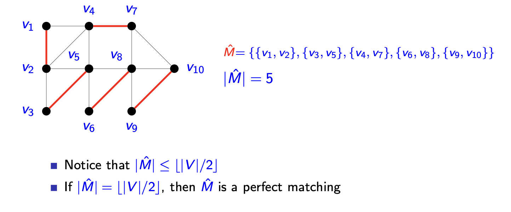
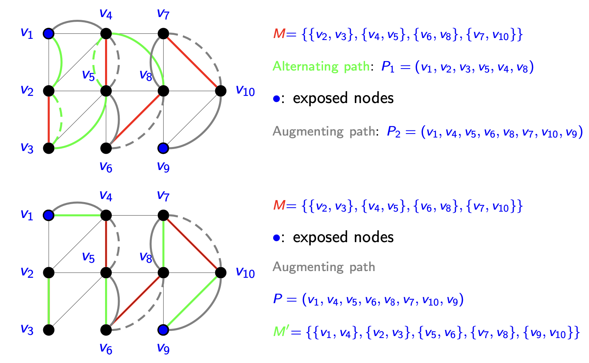
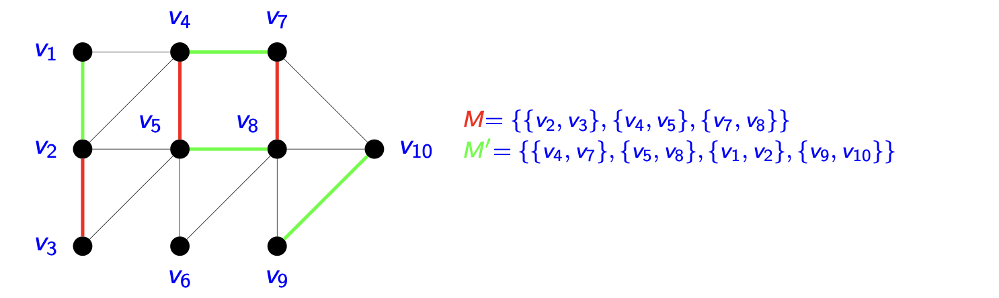
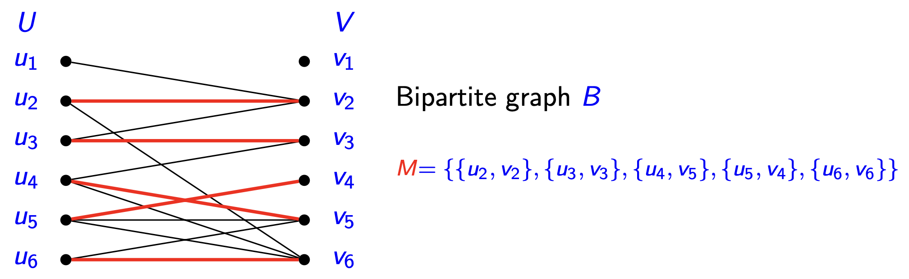
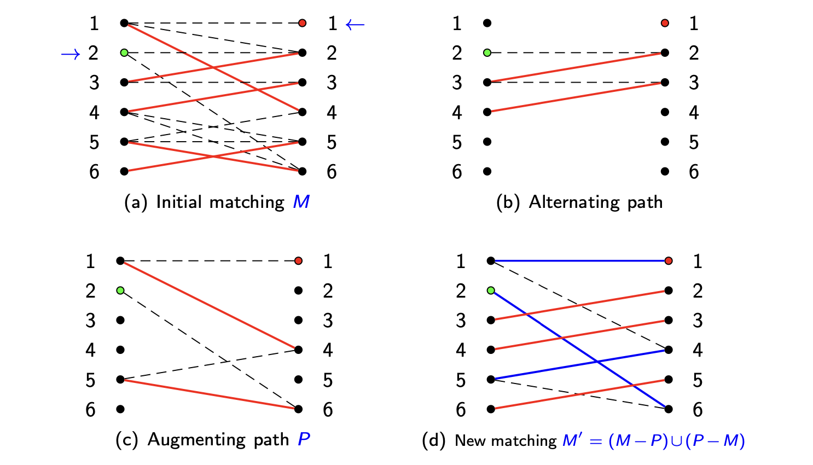
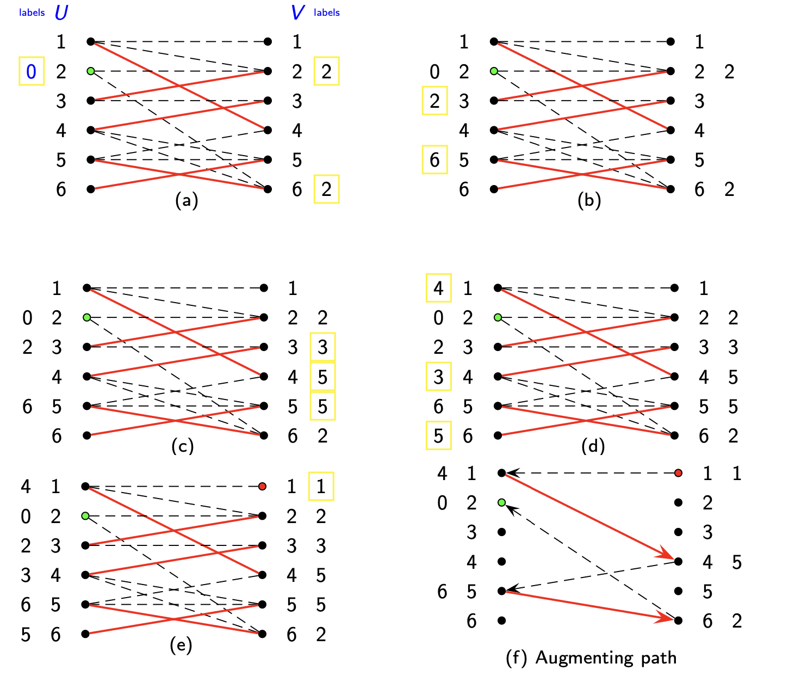
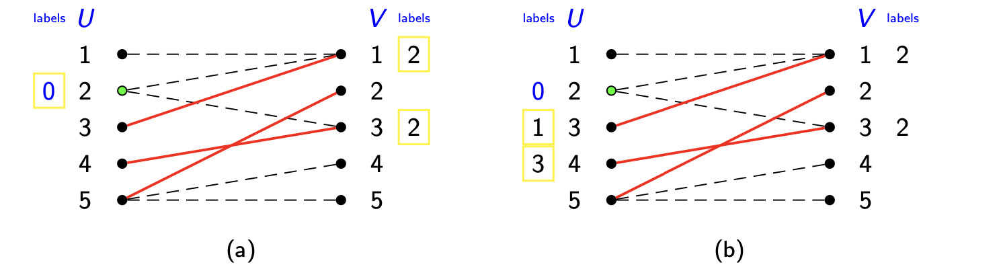
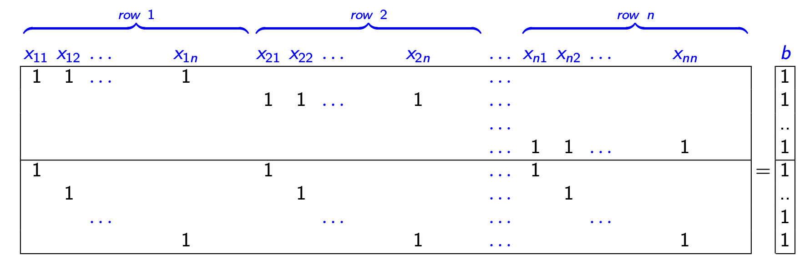
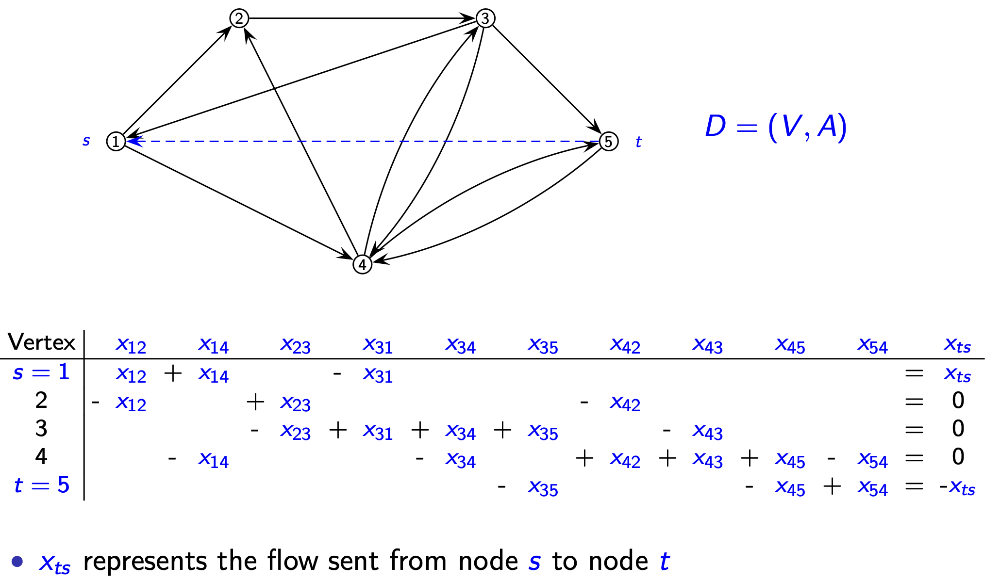

离散优化 Ch_06: 整数多面体与全单模性完整指南¶
本章概要
本章研究整数多面体与全单模性，目标是识别哪些整数规划问题可以通过线性规划松弛高效求解。核心结论：具有全单模矩阵的线性规划，只要最优值有限，就一定存在整数最优解。
1. 易解问题 (Well-Solved Problems)¶
1.1 基础概念¶
本节研究某些整数和组合优化问题，它们被称为易解的（well-solved），即存在高效算法（多项式时间算法）求解所有实例。
目标：介绍证明一个离散优化问题的形式（其线性松弛由多面体 \(X\) 给出）是整的（integral）的方法，即 \(X\) 的所有极值点都具有整数坐标（也就是该形式是理想的 ideal）。
考虑整数规划问题 \(P\) 的形式：
定义 1：分离问题 (Separation Problem)
给定多面体 \(X \subseteq \mathbb{R}^n\) 和点 \(x^* \in \mathbb{R}^n\)，判定 \(x^* \in \operatorname{conv}(X)\) 是否成立；若不成立，则找出满足 \(X\) 中所有点但不满足 \(x^*\) 的不等式 \(\pi x \leq \pi_0\)。
易解问题的四条等价性质
表明问题 \(P\) 是易解的四条性质（通常同时成立）：
- 高效优化性质（Efficient Optimization Property）：存在高效（多项式时间）算法
- 强对偶性质（Strong Dual Property）：存在强对偶问题 \(D: \max\{w(u) : u \in U\}\)，使得我们可以获得可快速验证的最优性条件： $$ x^ \in X \text{ 在 } P \text{ 中最优} \iff \exists u^ \in U \text{ 使得 } c x^ = w u^ $$
- 高效分离性质（Efficient Separation Property）：存在求解与 \(P\) 相关分离问题的高效算法
- 显式凸包性质（Explicit Convex Hull Property）：对凸包 \(\operatorname{conv}(X)\) 存在紧致的描述
1.2 高效优化性质：基数匹配问题 (Cardinality Matching)¶
基数匹配问题 (Cardinality Matching Problem)
给定图 \(G = (V, E)\)，匹配（matching）\(M \subseteq E\) 是一组互不相交的边（disjoint edges）。该问题是寻找图 \(G\) 中最大基数的匹配 \(M\)。
注意 \(|\hat{M}| \leq \lfloor |V| / 2 \rfloor\)。若 \(|\hat{M}| = \lfloor |V| / 2 \rfloor\)，则 \(\hat{M}\) 是完美匹配（perfect matching）。

交替路径与增广路径 (Alternating and Augmenting Paths)¶
给定匹配 \(M\)：
| 术语 | 定义 |
|---|---|
| 匹配边（matched edges） | 属于 \(M\) 的边；其余为自由边（free） |
| 配偶（mate） | 若 \(\{v,u\}\) 是匹配边，则 \(u\) 是 \(v\) 的配偶 |
| 暴露节点（exposed） | 不与任何匹配边关联的节点；其余为匹配节点（matched） |
交替路径 (Alternating Path)
路径 \(P = (\mu_1, \mu_2, \ldots, \mu_k)\) 称为交替的，如果边 \(\{\mu_1,\mu_2\}, \{\mu_3,\mu_4\}, \ldots, \{\mu_{2j-1},\mu_{2j}\}, \ldots\) 是自由的，而 \(\{\mu_2,\mu_3\}, \{\mu_4,\mu_5\}, \ldots, \{\mu_{2j},\mu_{2j+1}\}, \ldots\) 是匹配的。
增广路径 (Augmenting Path)
交替路径 \(P = (\mu_1, \mu_2, \ldots, \mu_k)\) 称为增广的，如果 \(\mu_1\) 和 \(\mu_k\) 都是暴露节点。

最优性条件 (Optimality Conditions)¶
引理 1：增广操作
设 \(P\) 是关于匹配 \(M\) 的增广路径 \(P = (\mu_1, \mu_2, \ldots, \mu_{2k})\) 上的边集。则 \(M' = (M - P) \cup (P - M)\) 是一个基数为 \(|M| + 1\) 的匹配。
示例：见上图中的增广路径 \(P = (v_1, v_4, v_5, v_6, v_8, v_7, v_{10}, v_9)\)，以及新匹配： $$ M' = {{v_1,v_4}, {v_2,v_3}, {v_5,v_6}, {v_7,v_8}, {v_9,v_{10}}} $$
证明要点： 1. \(M'\) 是匹配：通过反证法，考虑三种情况（两边都在 \(M-P\)、都在 \(P-M\)、一边在 \(M-P\) 一边在 \(P-M\)），利用交替性导出矛盾 2. 基数计算：\(P\) 包含 \(2k-1\) 条边，其中 \(k\) 条自由边，\(k-1\) 条属于 \(M\)。因此： $$ |M'| = (|M| - (k-1)) + ((2k-1) - (k-1)) = |M| + 1 $$
定理 1：最优性条件 (Optimality Conditions)
图 \(G\) 中的匹配 \(M\) 是最大的，当且仅当 \(G\) 中不存在关于 \(M\) 的增广路径。
证明概要： - 一个方向由引理 1 直接得到 - 另一方向：假设不存在增广路径但 \(M\) 不是最大的，则存在更大匹配 \(M'\)（\(|M'| > |M|\)） - 考虑图 \(G' = (V, (M - M') \cup (M' - M))\)

- \(G'\) 中所有顶点度数 \(\leq 2\)；若度数为 2，则一条边在 \(M\) 中，另一条在 \(M'\) 中
- \(G'\) 的连通分支是路径或圈
- 在所有圈中，\(M\) 和 \(M'\) 的边数相同
- 因 \(|M'| > |M|\)，在某条路径中 \(M'\) 的边多于 \(M\)，该路径即为增广路径，矛盾
1.3 二分图上的基数匹配 (Cardinality Matching on Bipartite Graphs)¶
二分图 (Bipartite Graph)
图 \(B = (W, E)\) 称为二分图，如果顶点集 \(W\) 可划分为两个集合 \(U\) 和 \(V\)，且每条边的一个端点在 \(U\) 中，另一个在 \(V\) 中。记为 \(B = (U, V, E)\)。

二分图上的交替与增广路径示例¶

二分图最大基数匹配算法¶
二分图最大匹配算法
步骤 1：给定 \(G = (U, V, E)\)，初始匹配 \(M\)，所有节点未标记未扫描
步骤 2：标记（Labeling） - 2.1 给 \(U\) 中所有暴露节点标记 0 - 2.2 若无未扫描标记，转到步骤 4。选择标记未扫描节点 \(i\)。若 \(i \in U\)，转到 2.3；若 \(i \in V\)，转到 2.4 - 2.3 扫描标记节点 \(i \in U\)：对所有 \(\{i,j\} \in E \setminus M\)，若 \(j\) 未标记，给 \(j\) 标记 \(i\)。返回 2.2 - 2.4 扫描标记节点 \(i \in V\)：若 \(i\) 是暴露的，转到步骤 3；否则找到边 \(\{j,i\} \in M\)，给节点 \(j \in U\) 标记 \(i\)。返回 2.2
步骤 3：增广（Augmentation） 找到增广路径 \(P\)，利用标记回溯。增广 \(M\)：\(M = (M - P) \cup (P - M)\)。清除所有标记，返回步骤 2
步骤 4：无增广路径 令 \(U^{+}\) 和 \(V^{+}\) 分别为 \(U\) 和 \(V\) 中已标记的节点，\(U^{-}\) 和 \(V^{-}\) 为未标记节点
算法示例¶

无增广路径的情况：

在图 (b) 中，\(U\) 中的顶点 3 和 4 无法标记 \(V\) 中的任何顶点。由于没有未扫描标记且 \(V\) 中无暴露节点，因此 \(G\) 中不存在从 \(U\) 中暴露顶点 2 开始的增广路径。
算法的理论基础¶
定理 2：算法正确性
算法终止时： 1. \(R = U^{-} \cup V^{+}\) 是边集 \(E\) 的节点覆盖（node covering） 2. \(|M| = |R|\)，且 \(|M|\) 是最优的（即强对偶性成立）
证明要点： - 由步骤 2.3，\(U^{+}\) 到 \(V^{-}\) 无边，故 \(R\) 覆盖 \(E\) - 无增广路径意味着 \(V^{+}\) 中每个节点都被覆盖，对应边另一端在 \(U^{+}\) 中 - \(U^{-}\) 中每个节点都关联于 \(M\) 中的边（否则会被标记 0），另一端必在 \(V^{-}\) 中（否则会被标记） - 故 \(|R| = |U^{-} \cup V^{+}| \leq |M|\)。由弱对偶性 \(|R| \geq |M|\)，得 \(|R| = |M|\)
计算复杂性 (Computational Complexity)¶
| 项目 | 复杂度 |
|---|---|
| 匹配边数上界 | $\min{ |
| 增广阶段数 | $\min{ |
| 每阶段复杂度 | $O( |
| 总复杂度 | $O(\min{ |
2. 整多面体 (Integral Polyhedra)¶
整点（Integral point）：\(x \in \mathbb{Z}^n\)。
研究确保相应线性优化问题具有最优整数解的多面体性质。
命题 1：整多面体的刻画
非空多面体 \(P = \{x \in \mathbb{R}^n : Ax \geq b\}\) 且 \(\operatorname{rank}(A) = n\) 是整的，当且仅当其所有极值点都是整的。
推论 1
若非空多面体 \(P \subseteq \mathbb{R}_+^n\)，则 \(\operatorname{rank}(A) = n\)，且 \(P\) 是整的当且仅当其所有极值点都是整的。
整多面体可由 LP 的最优解刻画。
命题 2：整多面体的等价刻画
以下陈述等价： 1. \(P\) 是整多面体 2. 对所有存在最优解的 \(c \in \mathbb{R}^n\)，LP 存在整数最优解 3. 对所有存在最优解的 \(c \in \mathbb{Z}^n\)，LP 存在整数最优解 4. 对所有存在最优解的 \(c \in \mathbb{Z}^n\)，\(z(LP)\) 是整的
重要推论：若一个离散优化问题的形式具有多项式数量的变量和约束，且被证明是整的，则该问题可被高效求解（某些情况下约束数为指数级亦可）。
证明多面体整性的方法
- 全对偶整数性（Total Dual Integrality）
- 全单模性（Total Unimodularity）
- 对偶方法（Dual Methods）
- 随机取整方法（Randomized Rounding Methods）
- 最小反例法（The Minimal Counterexample Method）
- 提升投影法（The Method of Lift and Project）
这些方法不仅证明形式是整的，还提供直接（高效）的优化算法。
3. 全对偶整数性 (Total Dual Integrality, TDI)¶
陈述 4 提供了通过研究对偶多面体来建立 \(P\) 整性的技术。
定义 2：全对偶整性 (Totally Dual Integral)
线性不等式组 \(Ax \geq b\) 称为全对偶整的（Totally Dual Integral, TDI），如果对所有使 $$ z(LP) = \max{cx : Ax \geq b} $$ 有限的整向量 \(c\)，对偶问题 $$ \min{yb : yA = c, y \in \mathbb{R}_+^m} $$ 都存在整数最优解。
推论 2
若 \(Ax \leq b\) 是 TDI 且 \(b\) 是整的，则 \(P = \{x \in \mathbb{R}^n : Ax \leq b\}\) 是整多面体。
注意：可以证明，对任何有理系统 \(Ax \geq b\)，存在整数 \(w\) 使得 \((1/w)Ax \geq (1/w)b\) 是 TDI。因此，系统是否为 TDI 本身并不能告诉我们关于相应多面体结构的有用信息，除非 \(b\) 是整的。
命题 3
若 \(P = \{x \in \mathbb{R}^n : Ax \leq b\}\) 是整多面体，则 \(P\) 可表示为 \(P = \{x \in \mathbb{R}^n : A'x \leq b'\}\)，其中 \(A'x \leq b'\) 是 TDI 且 \(b'\) 是整的。
注意：整多面体的线性不等式描述可能不是 TDI。
4. 全单模性 (Total Unimodularity, TU)¶
设 \(\mathcal{F} = \{x \in \mathbb{Z}_+^n : Ax \leq b\}\)，\(A \in \mathbb{Z}^{m \times n}\)，\(b \in \mathbb{Z}^m\)。设 \(P = \{x \in \mathbb{R}_+^n : Ax \leq b\}\)。
目标：推导矩阵 \(A\) 的充分必要条件，使得对所有整向量 \(b\) 都有 \(P = \operatorname{conv}(\mathcal{F})\)。
定义 3：余子式 (Cofactor)
\(A_{ij}\) 是 \(a_{ij}\) 的余子式，定义为 \((-1)^{i+j}\) 乘以从 \(A\) 中删除第 \(i\) 行第 \(j\) 列所得子矩阵的行列式。
命题 4：伴随矩阵
$$ A^{-1} = \frac{D}{\det(A)} $$ 其中 \(D\) 是 \(ij\) 元素为 \(A_{ij}\)（\(a_{ij}\) 的余子式）的矩阵的转置。\(D\) 称为 \(A\) 的伴随矩阵（adjoint matrix）。
对于 \(P = \{x \in \mathbb{R}_+^n : Ax = b\}\)，\(\operatorname{rank}(A) = m\)，由 LP 理论：
其中 \(B\) 是 \(A\) 的 \(m \times m\) 非奇异子矩阵。
命题 5：充分条件 (Sufficient Condition)
若最优基 \(B\) 满足 \(\det(B) = \pm 1\)，则 LP 松弛可求解 IP。
问题：何时所有基或所有最优基满足 \(\det(B) = \pm 1\)？
定义 4：一元与全单模矩阵
(a) 满行秩矩阵 \(A \in \mathbb{Z}^{m \times m}\) 称为一元的（unimodular），如果 \(\det(A) = \pm 1\)。满行秩矩阵 \(A \in \mathbb{Z}^{m \times n}\) 称为一元的，如果 \(A\) 的每个基的行列式为 1 或 -1。
(b) 矩阵 \(A \in \mathbb{Z}^{m \times n}\) 称为全单模的（Totally Unimodular, TU），如果 \(A\) 的每个方子矩阵的行列式为 \(0\)、\(1\) 或 \(-1\)。
观察 1
若 \(A\) 是 TU，则对所有 \(i,j\) 有 \(a_{ij} \in \{+1, -1, 0\}\)。
全单模矩阵的所有元素必属于 \(\{+1, -1, 0\}\)。
示例：TU 与 Unimodular 矩阵
TU 矩阵： $$ \left( \begin{array}{rrrr} 1 & -1 & -1 & 0 \ -1 & 0 & 0 & 1 \ 0 & 1 & 0 & -1 \ 0 & 0 & 1 & 0 \end{array} \right) $$
是 unimodular 但不是 TU 的矩阵： $$ \left( \begin{array}{cc} 3 & 2 \ 1 & 1 \end{array} \right) $$
命题 6：一元与全单模矩阵的关系
(a) \(A\) 是 TU 当且仅当 \([A, I]\) 是 unimodular
(b) \(A\) 是 TU 当且仅当 \(A^T\) 是 TU
(c) \(A\) 是 TU 当且仅当 \(\begin{bmatrix} A \\ -A \\ I \\ -I \end{bmatrix}\) 是 TU
示例：矩阵 \(A = \begin{pmatrix} 1 & 1 & 0 & 0 \\ 1 & 0 & 1 & 1 \\ 0 & 1 & 1 & 0 \\ 1 & 1 & 0 & 1 \end{pmatrix}\) 不是 TU，但 \(A = \begin{pmatrix} 1 & 1 & 0 \\ 1 & 0 & 1 \end{pmatrix}\) 是 TU。
定理 3：TU 的充要条件
(a) 设 \(A\) 是满行秩整矩阵。\(A\) 是 unimodular 当且仅当多面体 \(P(b) = \{x \in \mathbb{R}_+^n : Ax = b\}\) 对所有使 \(P(b) \neq \emptyset\) 的 \(b \in \mathbb{Z}^m\) 都是整的
(b) 设 \(A\) 是整矩阵。\(A\) 是 TU 当且仅当多面体 \(P(b) = \{x \in \mathbb{R}_+^n : Ax \leq b\}\) 对所有使 \(P(b) \neq \emptyset\) 的 \(b \in \mathbb{Z}^m\) 都是整的
结合前述命题，给出 TU 的其他刻画：
推论 3
(a) \(A\) 是 TU 当且仅当 \(\{x : Ax = b, 0 \leq x \leq u\}\) 对所有整向量 \(b\) 和 \(u\) 都是整的
(b) \(A\) 是 TU 当且仅当 \(\{x : a \leq Ax \leq b, l \leq x \leq u\}\) 对所有整向量 \(a, b, l, u\) 都是整的
本质上已证明，对于 \(A\) 为 TU 的 IP \(\min\{cx : Ax \geq b, x \in \mathbb{Z}_+^n\}\)：
| 性质 | 表现 |
|---|---|
| 强对偶性质 | 线性规划 \((D) : \max\{ub : uA \leq c, u \geq 0\}\) 是强对偶 |
| 显式凸包性质 | 可行解集的凸包 \(\operatorname{conv}(X) = \{Ax \geq b, x \geq 0\}\) 已知 |
| 高效分离性质 | 分离问题易解，只需检查 \(Ax^* \leq b\) 和 \(x^* \geq 0\) |
| 高效算法 | 存在 IP 的高效算法 |
重要性质
具有全单模矩阵的线性规划，只要最优值有限，就一定存在整数最优解。
A Linear Program with a (totally) unimodular matrix always has an integral optimal solution provided the optimum is finite.
全单模性的判定条件¶
定理 4：TU 的列划分刻画
\(A\) 是 TU 当且仅当 \(A\) 的每一列集合 \(J\) 可被划分为两部分，使得一部分列的和减去另一部分列的和是元素仅为 \(0, +1, -1\) 的向量。
由于 \(A\) 是 TU 当且仅当 \(A^T\) 是 TU：
推论 4：TU 的行划分刻画
\(A\) 是 TU 当且仅当 \(A\) 的每一行集合 \(Q\) 可被划分为两部分，使得一部分行的和减去另一部分行的和是元素仅为 \(0, +1, -1\) 的向量。
定理 5：TU 的充分条件 (Sufficient Conditions)
矩阵 \(A\) 是 TU 如果满足： 1. 对所有 \(i,j\)，\(a_{ij} \in \{+1, -1, 0\}\) 2. 每列至多包含两个非零系数（\(\sum_{i=1}^{m} |a_{ij}| \leq 2\)） 3. 存在行集 \(M\) 的划分 \((M_1, M_2)\)，使得每列 \(j\) 若包含两个非零系数，则满足 \(\sum_{i \in M_1} a_{ij} = \sum_{i \in M_2} a_{ij}\)
节点 - 边与节点 - 弧关联矩阵¶
定义 5：节点 - 边关联矩阵 (Node-edge Incidence Matrix)
图 \(G = (V, E)\) 的节点 - 边关联矩阵是 \(n = |V|\) 行 \(m = |E|\) 列的 0-1 矩阵 \(B\)，其中 \(b_{je} = 1\) 当且仅当节点 \(j\) 是边 \(e\) 的端点，否则 \(b_{je} = 0\)。
定义 6：节点 - 弧关联矩阵 (Node-arc Incidence Matrix)
有向图 \(G = (V, A)\) 的节点 - 弧关联矩阵是 \(n = |V|\) 行 \(m = |A|\) 列的矩阵 \(B\)，其中： $$ b_{ij} = \begin{cases} 1 & \text{若 } a_j = (k, i) \text{ 对某个 } k \in V \setminus {i} \ -1 & \text{若 } a_j = (i, k) \text{ 对某个 } k \in V \setminus {i} \ 0 & \text{否则} \end{cases} $$
定理 6：三类 TU 矩阵
以下矩阵是 TU： - 有向图的节点 - 弧关联矩阵 - 无向二分图的节点 - 边关联矩阵 - 每列的 1 是连续出现的 0-1 矩阵（称为区间矩阵, interval matrix）
4.1 全单模性的应用¶
指派问题 (Assignment Problem, AP)¶
回顾指派问题：
约束：
约束可写为 \(Ax = 1\)，其中 \(A\) 是完全二分图的节点 - 边关联矩阵。

结论：\(A\) 是 TU，因此可通过求解线性规划来求解指派问题。
基数匹配 (Cardinality Matching)¶
回顾基数匹配的对偶：
考虑二分图情形，即 \(A\) 是二分图的节点 - 边关联矩阵。
结论：
- 多面体 \(P = \{1x : Ax \leq 1, x \in \mathbb{R}_+^m\}\) 由 TU 性知是整的，且具有最优整数值
- 由 LP 对偶性，\(\min \{1y: yA \geq 1, y \in \mathbb{R}_+^n\}\) 具有最优整数值
- 由命题 2，多面体 \(Q = \{1y : yA \geq 1, y \in \mathbb{R}_+^n\}\) 是整的，\(MCCP\) 有整数最优解
- MCMP 和 MCCP 构成强对偶对（strong dual pair）
回忆我们还为其推导了高效优化算法。
最大流问题 (Maximum Flow)¶
给定有向图 \(D = (V, A)\)，两个特殊节点 \(s, t \in V\)，以及弧容量 \(h_{ij} \geq 0\)（对 \((i,j) \in A\)），求从 \(s\) 到 \(t\) 的最大流。
设 \(x_{ij}\) 为弧 \((i,j) \in A\) 上的流：
约束：
其中 \(\Gamma^{-}(i) = \{k \in V : (k,i) \in A \cup \{t,s\}\}\)，\(\Gamma^{+}(i) = \{k \in V : (i,k) \in A \cup \{t,s\}\}\)，且 \((t,s)\) 是额外添加的弧。

结论：系数矩阵是有向图 \(D\) 的节点 - 弧关联矩阵（TU 矩阵）。
考虑对偶：
约束：
其中 \(u_i \in \mathbb{R}\)（\(i \in V\)）和 \(w_{ij} \geq 0\)（\((i,j) \in A\)）分别是等式约束和 upper bound 约束的对偶变量。
由 TU 性，对偶存在整数最优解。因可将所有 \(u_j\) 替换为 \(u_j + \alpha\)，可设 \(u_s = 0\)。
给定对偶解，令 \(X = \{j \in V : u_j \leq 0\}\)，\(\tilde{X} = V \setminus X = \{j \in V : u_j \geq 1\}\)。因对 \((i,j) \in A\) 且 \(i \in X, j \in \tilde{X}\)，有 \(w_{ij} \geq u_j - u_i \geq 1\) (*)，故：
下界 \(\sum_{(i,j) \in A, i \in X, j \in \tilde{X}} h_{ij}\) 可由以下 0-1 解达到：
- \(u_j = 0\)（对 \(j \in X\)），\(u_j = 1\)（对 \(j \in \tilde{X}\)）
- \(w_{ij} = 1\)（对所有 \((i,j) \in A\) 且 \(i \in X, j \in \tilde{X}\)），否则 \(w_{ij} = 0\)
\(s \in X, t \in \tilde{X}\)，且 \(\{(i,j) \in A : w_{ij} = 1\}\) 定义了 \(s-t\)割（cut）\((X, \tilde{X})\)，其中 \(\tilde{X} = V \setminus X\)。
定理 7：最大流 - 最小割定理 (Max-Flow Min-Cut Theorem)
最大 \(s-t\) 流问题的强对偶是最小 \(s-t\) 割问题： $$ \min_{X} \left{ \sum_{(i,j) \in A: i \in X, j \notin X} h_{ij} : s \in X \subseteq V \setminus {t} \right} $$
5. 注释与参考文献 (Notes and References)¶
- 定理 2 的证明见 Wolsey [3, Theorem 4.3]
- 命题 1、推论 1 和命题 2 见 Nemhauser and Wolsey [2, sec. III.1.1]
- 证明多面体整性的方法描述于 Bertsimas and Weismantel [1, chap. 3]
- 推论 2 见 Nemhauser and Wolsey [2, sec. III.1.1, Corollary 1.4]；命题 3 见 Nemhauser and Wolsey [2, sec. III.1.1, Proposition 1.7]
- Nemhauser and Wolsey [2] 的例 III.1.2 显示整多面体的线性不等式描述可能不是 TDI
- 命题 5 见 Wolsey [3, chap. 3.2]
- 命题 6 见 Bertsimas and Weismantel [1, Proposition 3.2]
- 命题 3、定理 3 和推论 3 见 Bertsimas and Weismantel [1, Proposition 3.2, Theorem 3.1, Corollary 3.1]
- 命题 5 见 Wolsey [3, Proposition 3.2]
- 定理 4 见 Bertsimas and Weismantel [1, Theorem 3.2]
6. 参考文献 (Bibliography)¶
[1] Bertsimas, D. and R. Weismantel, 2005: Optimization over integers. Athena Scientific.
[2] Nemhauser, G. L. and L. A. Wolsey, 1988: Integer and combinatorial optimization. Wiley-Interscience.
[3] Wolsey, L. A., 1998: Integer programming. Wiley-Interscience.